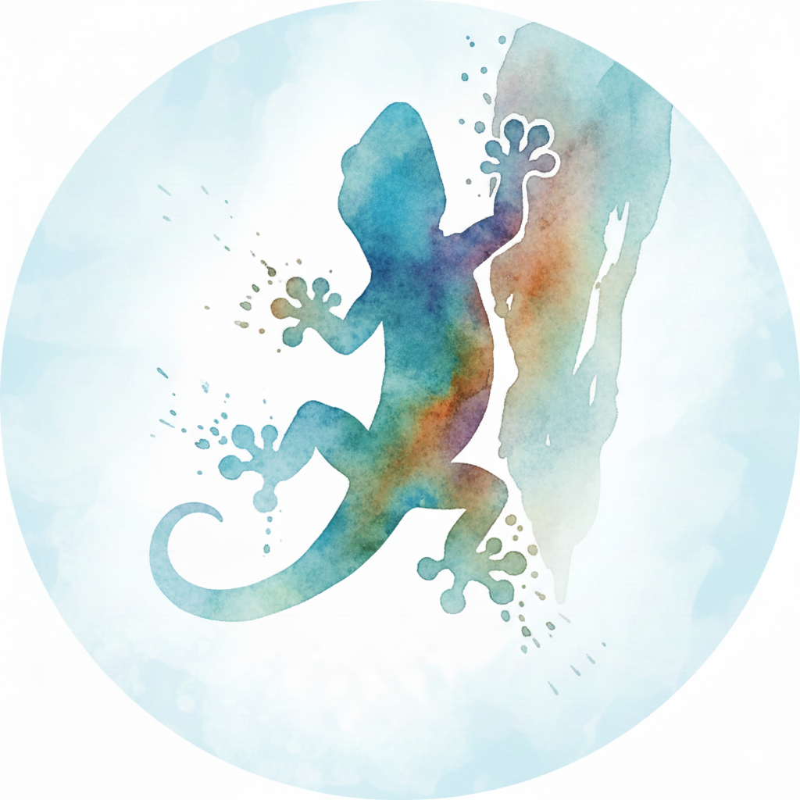

CURRENT
MLOps（推薦系）
- 学習パイプライン作成
- モデル評価機構作成
フロントエンドからバックエンド、インフラまで一貫して携わるフルスタックエンジニア。「なぜ動くのか」にこだわりながら、最終的にユーザーへ届く形まで責任を持って届ける。

「なぜ動くのか」を理解することにこだわるエンジニア。
ライブラリもフレームワークも、ブラックボックスのまま使うのは落ち着かない。中身を覗いて、仕組みを理解してから使いたい。他のメンバーに任せる領域でも、自分で理解することは怠らない。
……とはいえ、現実は厳しい。時間も有限、ユーザーを待たせるわけにもいかない。「完全に理解した」くらいで見切り発車している技術も、正直たくさんある。「ちょっとわかる」と言えるものを増やしたいと思いながら、日々コードを書いている。
バックエンド・インフラを軸に、フロントエンドまで一貫して携わるフルスタックエンジニア。